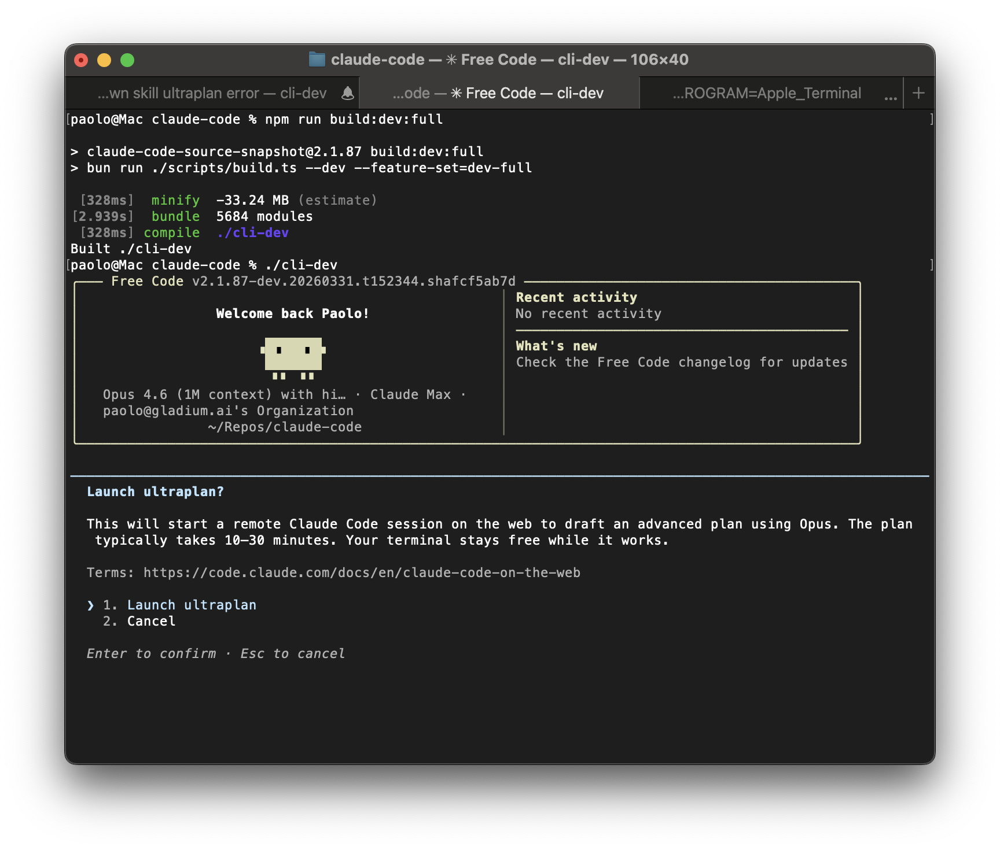

中文终端界面
locale 文件 zh-CN / en-US 各 378 个
key。用 FREE_CODE_LANG=zh-CN 或
./wtcc-zh.sh 切到中文。命令名、env、model id
保持英文。REPL 主屏仍有未翻译的英文字面量。
终端 CLI · 不是浏览器应用
wtcc（WT Claude Code）跑在终端里，用 Ink / React 画 TUI。
它在公开可见的 Claude Code 源码上增加中文 i18n、Anthropic 与 OpenAI
兼容协议路径，以及按 model id 做的能力推断与 /cost 计价。
本站只写仓库 README、源码和
assets/screenshot.png 能核验的内容。

assets/screenshot.png。这是 Ink
终端界面的 cli-dev 构建画面：标题栏与 banner 仍带上游
Free Code / Claude Code 痕迹，并出现英文欢迎语与 ultraplan
对话框。它证明本项目是终端 TUI，不是浏览器产品截图，也
不是当前 wtcc 中文欢迎屏。
locale 文件 zh-CN / en-US 各 378 个
key。用 FREE_CODE_LANG=zh-CN 或
./wtcc-zh.sh 切到中文。命令名、env、model id
保持英文。REPL 主屏仍有未翻译的英文字面量。
源码把 provider 收成 anthropic 与
openai。后者走 OpenAI 兼容 HTTP（含 relay 的
OPENAI_BASE_URL）。没有独立的 Gemini / DeepSeek
官方 SDK。
打开 CLAUDE_CODE_USE_OPENAI=1 时，会 GET relay 的
/v1/models，把返回的 id 填进
/model。内部 registry 刻意留空，不维护「支持清单」。
/effort 按 model id 露出不同档位。
opus-4-7 含 xhigh（32k thinking
budget）；其它家族更少。OpenAI 线上把
max / xhigh 收成 high。
不写用户数、星标意义、性能数字、市场份额或「生产就绪」口号。不把 README 里的 GPT / Gemini / DeepSeek / Kimi / GLM / Qwen 写成官方直连。不把截图里的 Free Code banner 说成当前 wtcc 品牌界面。上游实验 feature flag、未完成登录方式和 Windows 原生支持见 限制。
| 项 | 来源 |
|---|---|
npm 包 @unstoppablecurry/wtcc，当前 package.json 版本 0.1.7 |
package.json |
需要 Bun（engines：bun >= 1.3，Node shim 再 exec bun） |
package.json、bin/wtcc.cjs |
入口 src/entrypoints/cli.tsx，交互界面 src/screens/REPL.tsx |
CLAUDE.md |
对外 analytics logEvent 为空操作 |
src/services/analytics/index.ts |
| 许可证 ISC；上游 Claude Code 版权仍属 Anthropic | LICENSE |
English: wtcc is an Ink terminal CLI, not a web app. Chinese is the primary UI locale. Provider support is Anthropic plus OpenAI-compatible HTTP, not first-party SDKs for every model family named in pricing heuristics.